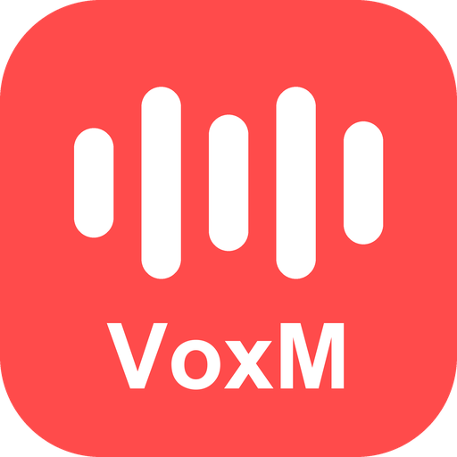
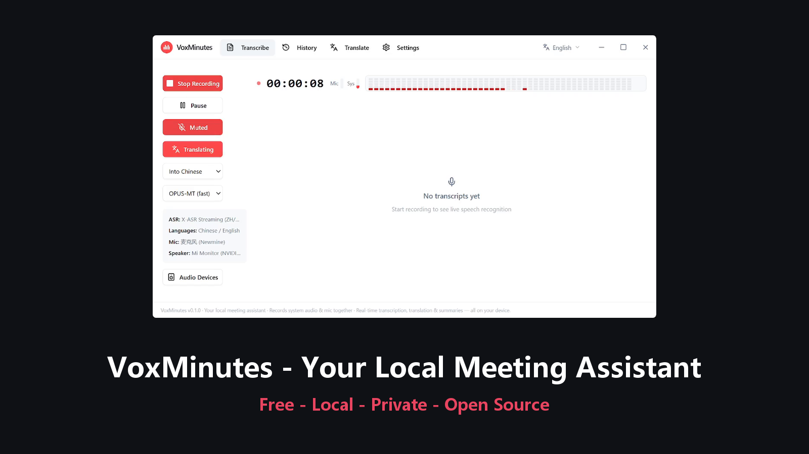
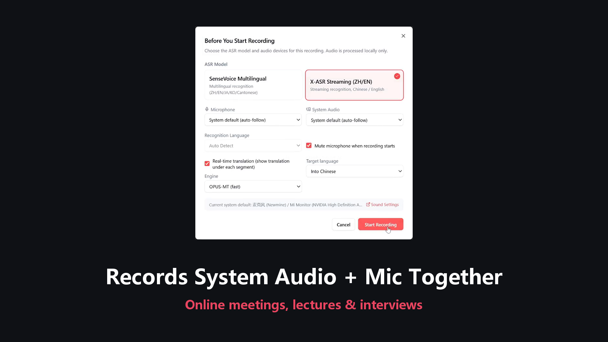
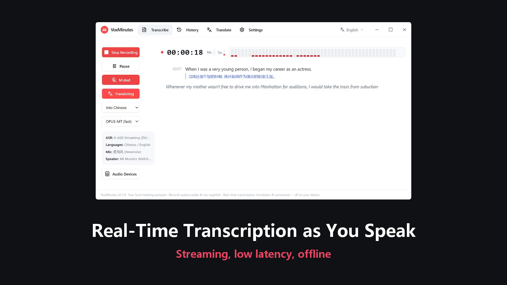
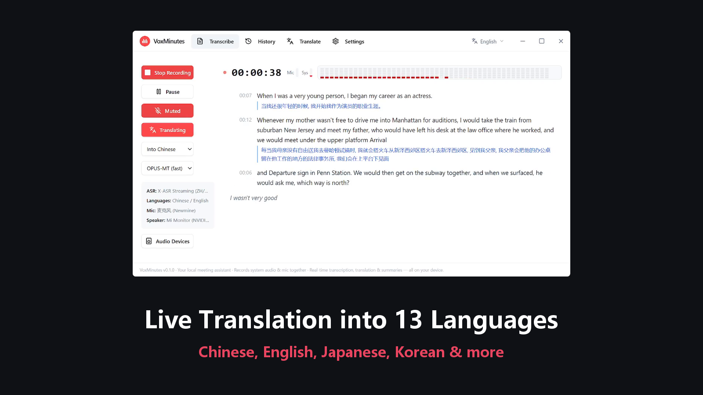
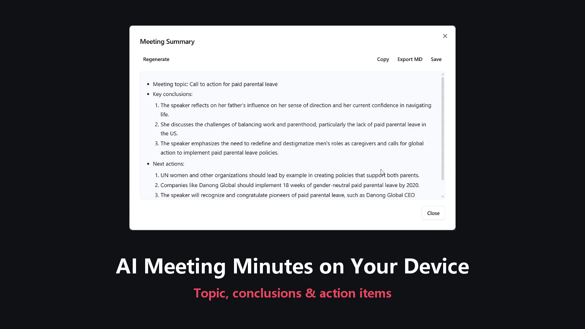

VoxMinutesシステム音声 + マイクを同時録音。話せば文字が出て、13言語にリアルタイム翻訳。ローカルAIがワンクリックで議事録を生成。アカウント不要、サブスク不要、ペイウォールなし。

一度録音すれば、文字起こし・翻訳・議事録まで全自動

システム音声とマイクを同時に録音。オンライン会議も対面も逃さず、1つのトラックに自動ミックス。

X-ASR / SenseVoice デュアルエンジンのストリーミング文字起こし。話した瞬間に文字が現れ、完全オフライン。

国際会議もその場で翻訳。会議後の整理を待つ必要はありません。

会議後、ワンクリックでローカルLLMがトピック・結論・アクションアイテムを生成。
すべての会議を全文検索
TXT / SRT / Markdown で出力
すべてのデータは自分のデバイスに
モデル取得後は完全オフライン
無料ダウンロード。モデルは初回起動ウィザードで取得。中国国内はミラーに自動切替。
VoxMinutes for Windows をダウンロード現在はWindowsのみ · Mac / Linux 計画中